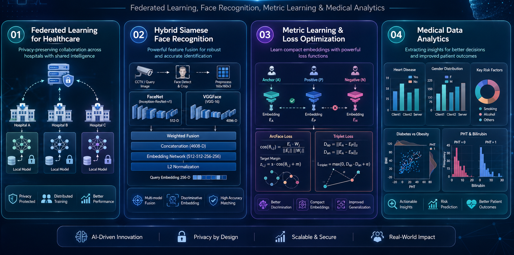
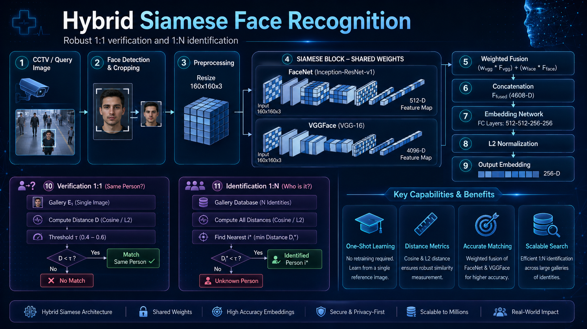
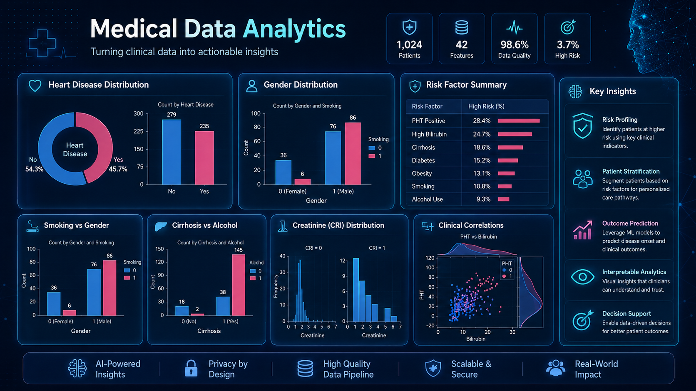
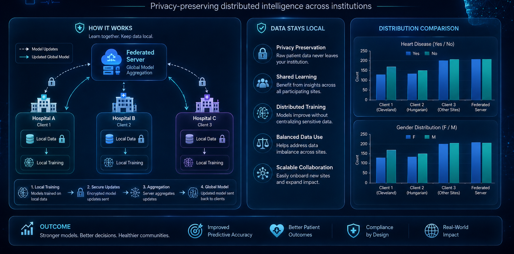

A Horizontal Federated Random Forest for Heart Disease Detection from Decentralized Local Data
Privacy-aware horizontal federated learning with random-forest aggregation for decentralized healthcare data.
My research spans metric learning and face verification, medical prediction, explainable computer vision, privacy-aware federated learning, NLP, and energy-material simulation. The common thread is rigorous evaluation, transparent methodology, and practical relevance.
The portfolio connects perception, privacy, prediction, and scientific modelling. Production experience then brings an additional lens: latency, data drift, threshold selection, operational risk, evidence, and human review.

Titles are preserved from the earlier portfolio and résumé. Publication links are centralized through ResearchGate and Google Scholar so the public profiles remain the source of record.
Privacy-aware horizontal federated learning with random-forest aggregation for decentralized healthcare data.
Comparative evaluation of classical classifiers for biopsy prediction with structured preprocessing and performance analysis.
Machine-learning workflow for liver-cancer severity prediction, including preprocessing, feature handling, and classifier comparison.
Semi-supervised NLP pipeline using tokenization, lemmatization, TF-IDF, and classical classification methods.
Numerical simulation and material/layer optimization for improved photovoltaic performance.
Comparative device simulation examining hole-transport-layer choices and efficiency-related parameters.
Transfer-learning comparison on augmented dental imagery with visual explanation through Grad-CAM.
The thesis focuses on real-time face recognition and verification using FaceNet/VGGFace representation fusion and Siamese-network concepts with ArcFace and triplet-loss objectives.

Combine complementary facial representations and learn a compact verification space for identity comparison.

Threshold analysis, precision/recall, F1, ROC/PR, EER, confusion matrix, ablation, and embedding-quality interpretation.

Operational considerations include enrollment quality, threshold policy, latency, edge/central architecture, privacy, watchlists, and human review.
For research collaboration, PhD discussion, reproducibility review, or an industry-to-academia project, use the direct contact channels.